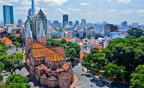

VIET NAM
INDEPENDENCE - LIBERTY - HAPPINESS

Hanoi, the capital of Vietnam, is one of the most ancient cities in the world. This place offers examples of both contemporary and classical architecture right in the city center. A renowned destination for typical cuisine, home to fascinating attractions and hospitable people, and a diverse region with a combination of multi-communities. There is plenty to enjoy in Hanoi, from mouthwatering street food to fascinating history, from traditional entertainment to recreational activities. Even with a short amount of time, you can still feel the tranquilness of the city while sipping a cup of coffee. Wandering around and shooting artistic photos on elegant streets in the Old Quarter would give you unique experiences that are hardly found anywhere else. Outside the suburban areas, you can discover small charming villages which are homes to so many ethnic minorities. Hanoi joined UNESCO's Network of Creative Cities as a Design City on 31 October 2019, on the occasion of World Cities' Day.
Ho Chi Minh City, commonly and formerly officially known as Saigon, is the largest city in Vietnam, situated in the south. In the southeastern region, the city surrounds the Saigon River and covers about 2,061 square kilometres (796 square miles). Prior to Vietnamese settlement in the 17th century, the city was a scarcely populated area that had been part of historic empires of Funan, Chenla, and Cambodia. With the arrival of Vietnamese, the area became more populated and officials began establishing the city from 1623 to 1698. After it was ceded by the last Vietnamese dynasty to the French in 1862, the name Saigon was adopted and the city underwent urbanization to become a financial center in the region. The city was the capital of South Vietnam until the end of the Vietnam War with North Vietnamese victory in 1975. In 1976, the government of the unified Vietnam renamed Saigon in honor of Hồ Chí Minh.The primary economic center of Vietnam, it is also an emerging international destination. Ho Chi Minh City has gone by several different names during its history, reflecting settlement by different ethnic, cultural and political groups. Originally a trading port city of the Khmer Empire known as Prey Nokor, it is still known as Prey Nokor to Cambodians today. In time, under the control of the Vietnamese, it was officially renamed Gia Dinh (嘉定), a name that was retained until the time of the French conquest in the 1860s, when it adopted the name Sài Gòn, westernized as Saïgon, although the city was still indicated as 嘉定 on Vietnamese maps written in Chữ Hán until at least 1891.
The current name, Ho Chi Minh City, was given after reunification in 1976 to honor Ho Chi Minh.[nb 1] Even today, however, the informal name of Sài Gòn remains in daily speech. However, there is a technical difference between the two terms: Sài Gòn is commonly used to refer to the city center in District 1 and the adjacent areas, while Ho Chi Minh City refers to all of its urban and rural districts.The current official name, Thành phố Hồ Chí Minh, first proclaimed in 1946, later adopted in 1976. The earliest settlement in the area was a Funan temple at the location of the current Phụng Sơn Buddhist temple, founded in the 4th century AD. A settlement called Baigaur was established on the site in the 11th century by the Champa. Baigaur was renamed Nokor around 1145, Nokor grew on the site of a small fishing village and area of forest. The first Vietnamese people crossed the sea to explore this land completely without the organization of the Nguyễn Lords. Thanks to the marriage between Princess Nguyễn Phúc Ngọc Vạn - daughter of Lord Nguyễn Phúc Nguyên - and the King of Cambodia Chettha II in 1620, the relationship between Vietnam and Cambodia became smooth, and the people of the two countries could freely move back and forth. Vietnamese settlers began to migrate to the area of Dong Nai. Before that the Funanese, Khmer, and Cham had lived there. Prior to Vietnamese settlement in the 17th century, the city was a scarcely populated area that had been part of historic empires of Funan, Chenla, and Cambodia.
In 2000, UNESCO's World Heritage Committee inscribed Hạ Long Bay in the World Heritage List according to its outstanding examples representing major stages of the Earth's history and its original limestone karstic geomorphologic features. Hạ Long Bay and its adjacent areas consist of a part of the Sino-Vietnamese composite terrane having its development history from pre-Cambrian up to present day.

During Phanerozoic, terrigenous, volcanogenic and cherty-carbonate sediments containing in abundance graptolites, brachiopods, fishes, corals, foraminiferas, radiolarias, bivalves and flora, separated one from another by 10 stratigraphic gaps, but the boundary between Devonian and Carboniferous has been considered as continuous. The limestone karstic geomorphology of the bay was developed since Miocene, especially the cone-shaped hills (fengcong), or isolated high limestone karst towers (fenglin) with many remnants of old phreatic caves, old karstic foot caves, marine notch caves form magnificent limestone karst landforms as unique on the world. The Quaternary geology was developed through 5 cycles with the intercalation of marine and continental environments.